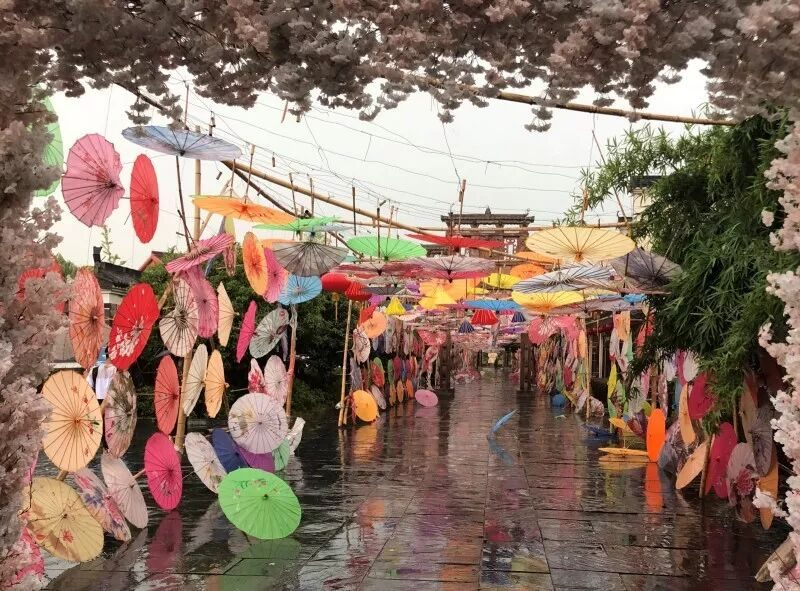
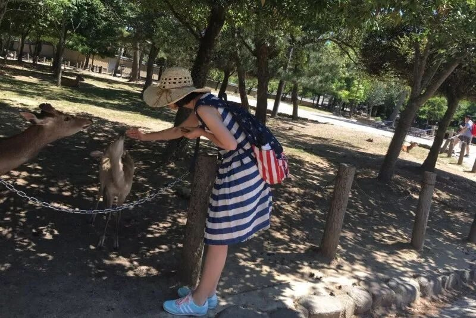

【素笺寄情·五】一生痴绝处 无梦亦无憾


炎热的八月，辗转的车程，是北方女孩初到南方。日行万步，充实而忙碌，是体验行者的滋味。鳜鱼鲜嫩，烧笋劲道入味，是回想徽菜的味蕾。欢歌笑语，一路同行，是与一群人从陌生到熟悉的相伴。许多的第一次，无数的苦乐交织，注定了这个夏天的不平凡，诠释了我的行者无疆。
六月紧张而憧憬，七月为行程和问卷每每从迟暮探讨到满天星斗，我怀着一颗向往的心来到行者无疆，并终于满载而归。这漫长的数月余，这短短的五六日，都让我成长，予我收获。
初来行者的我，以一个调研者的身份走进了这个大家庭，而同行路上，我又以文字记录者的身份完整了这个故事。每每想到严谨周密的行程中有我微薄的一点贡献，调查问卷的题目中有我挥洒的一份心血，每每看到公众号的每日推送中包含着我的笔墨，成就感便在我的心中像烟花一样绽放。
皖徽拾遗使我们来到了安徽这片传承千年的土地，领略了徽派建筑的气势磅礴，见识了徽州三雕的精巧细致，体验了缜密而繁多的宣纸制作工艺。而令我感触最深的，莫过于见到了大国工匠方新中老师和非遗传承人杨文师傅。犹记那日下着小雨，我们一行人围坐在方老师身旁，听他亲切的聊着往事，屋外雨声淅沥，屋内笑声爽朗，方老师的一言一行至今仍让人铭记于心，他用自己不骄不躁的职业态度与传承非遗的决心教给我的，将使我一生受益；拜访杨师傅的那日，他将自己的家族制笔历史向我们娓娓道来，向我们展示了精湛的制笔技艺，原以为一支小小的笔不论是谁都可以一蹴而就，但此次真正接触才知道，里面的学问千丝万缕，而杨师傅倾注了无数心血才达到今天的成就，实在令人敬佩不已。
我们此行跨越千里，由北往南的目的便是保护与发扬那些在文化长河中熠熠闪光了数百年的非遗文化。而大众对非遗的了解程度才是真正决定这些古老文明生存的关键。可是在途中采访行人和向街上路人发问卷的过程中，我发现其实多数人对于非遗还是知之甚少，有些人甚至是漠不关心，这让我觉得保护非遗道阻且艰，行者的路还有很长。
我想，既然有些文明已闪耀千年，便不该让它在我们手中熄灭，薪火相传方才能够生生不息，我希望保护非遗的决心并不仅仅是一腔热血，它应该是永恒的力量，不灭的希望。传承非遗的意识要在我们青年一代心中觉醒，发扬非遗的责任要由我们承担。
白驹过隙，我们一起走过的日子就这样结束了，像一场不愿醒来的大梦终于到了梦醒时分，哪怕这短短数日在人生中只是片刻，对我来说已是永恒的记忆。祝这些日子里携手同行的每一个人，都能在未来的大路上任意闯荡。行者无疆，有缘再会。

图片｜沈华，盛暘
文案｜杨宇晴
排版｜邓子孚
审核｜应雨珊，潘雯雯
长按二维码关注我们